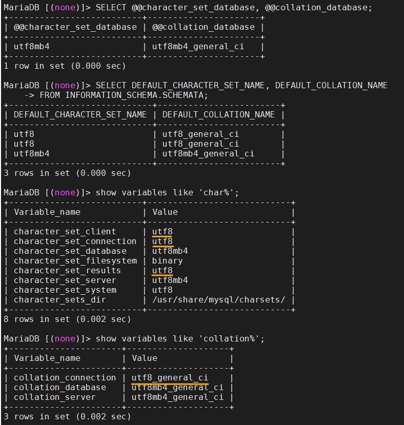

Self Command History
這裡存放自己操作成功，並整理過後的指令(包括 bash 和 docker)。
基本上照著做就可以到達同樣效果。
簡單來說就是我的指令記事本啦XD~
所以這邊都是從其他的 .md 檔複製過來之後，再做一點排版和補充。
basic
歷史資訊清除
history -c
history -w
exit
history--
重開機
sudo reboot--
已經安裝的套件
//列出可安裝的套件(，並計算個數)。
apt list
apt list | wc -l
//列出有安裝的套件，並計算個數。
apt list --installed | wc -l--
磁碟使用的初始狀況
-h, --human-readable print sizes in powers of 1024 (e.g., 1023M)
df -h--
權限
檔案
- -R, --recursive change files and directories recursively
chmod a+x <filename or folder>
//下面兩個語法等價。
chmod a+rwx <filename or folder>
chmod 777 <filename or folder>目錄之擁有者或群組
- -R, --recursive change files and directories recursively
chown -R ubuntu /data2/bigobject
chown -R ubuntu:ubuntu /data2/bigobject--
顯示目錄下-檔案-編碼-結尾換行符號
ls
ll
ls -al <-- 和ll功能相同
> 可以在後面加路徑，比如 ll /mnt/e/顯示該檔案的編碼與結尾換行符號類型。
file <filename>--
su 最高權限者
-i, --login: run login shell as the target user; a command may also be specified
//下面兩個效果相同。
sudo su
sudo -i--
Others
whoami: 顯示使用者名稱。
hostname: 顯示主機名稱。
ifconfig: 查詢、設定網路卡與 IP 網域等相關參數。觀察所有的網路介面。用來獲取網路介面配置資訊並對此進行修改。。
--
修改 ssh 登入
請看 ssh_connect.md
--
TWCC-port connect
請看 TWCC-port_connect.md
mount/umount Disk
注意這邊大部分的操作都需要 sudo su。
掛載狀況
- 磁碟使用的初始狀況。
- -h, --human-readable: print sizes in powers of 1024 (e.g., 1023M)
df -h- 列出所有(掛載中)磁碟
利用 blkid 這個指令，它可以列出所有掛載中磁碟的 UUID。
blk: 是指 block device，即儲存裝置。
//只會顯示有掛載的
blkid
//顯示所有硬碟
lsblk--
格式化、掛載、卸除
先格式化，再掛載~
mkfs -t ext4 /dev/vdb
mount -t ext4 /dev/vdb /datamount
df -h卸除磁碟
umount ext4 /dev/vdb
umount ext4 /datamount //這兩個都可以。
df -h--
設定開機自動掛載
各欄說明：<file system> <mount point> <type> <options> <dump> <pass>
- file system：磁碟裝置代號或該裝置的 Label。
- mount point：掛載點。
- type：磁碟分割區的檔案系統。
- options：檔案系統參數。
- dump：能否被 dump 備份指令作用。
- pass：是否以 fsck 檢驗磁區。
vi /etc/fstab
//給一個之前用好的範例結果
# <file system> <mount point> <type> <options> <dump> <pass> <--我加的註解。
LABEL=cloudimg-rootfs / ext4 defaults 0 0 <--原本就有。
LABEL=UEFI /boot/efi vfat defaults 0 0 <--原本就有。
UUID="67370358-c856-468b-b4d9-452bb3741ec3" /datamount ext4 defaults 0 0 <--新加的。Docker
紀錄操作的指令。
下載與設定
- docker
- 加入 docker 帳號到群組
- DockerHub login
- docker-compose
container 操作
- 啟動
- 重啟
- 停止
- 進入 container
- docker start $(docker ps -a -q): Command for restarting all running docker containers? - Stack Overflow
下載 images-01
OS system
- ubuntu
- centos
website
- thenetworkchuck/nccoffee:frenchpress，8081
- DockerCon2020 sample = littlefish0331/hello-world，8080
- Gitbook: 4001
- Grafana: 3000
下載 images-02Database
- mysql: 3306
- Postgress
- MSSQL: 1433
- mariadb: 3307
- BigObject: 3308, 9090, 9091
- ElasticSearch: 9200, 9300
下載 images-03code
- R+Rstudio(+python2+python3): 8787, 3838(shiny)
- Python+jupyter notebook/lab: 8888, 9999
- jupyter notebook mini/r/scipy: 8801, 8802, 8803
- R+Python+Julia+jupyter notebook/lab: 8800, 9900
下載 images-04others
- datascienceschool/rpython: 裡面有 Ubuntu, R, Python, Rstudio, postgres, jupyter notebook, ssh
- custom: ubuntu, R, rstudio, Python, jupyter notebook, Julia
--
下載與設定
docker download
兩種方法其實是一樣的。
// 這是我從 社群好友 - 紙鈔(money)，那邊學的。
// 從官方網站下載，然後以 shell 執行。
curl -sSL https://get.docker.com/ | sh
// 官方 docker Github 作法
// 先從官方網站下載，儲存檔名為 get-docker.sh
// 再用 sh 執行。
// -o, --output <file> Write to file instead of stdout
curl -fsSL https://get.docker.com -o get-docker.sh
sh get-docker.sh會有一個指令提醒使用者權限與群組問題
If you would like to use Docker as a non-root user, you should now consider adding your user to the "docker" group with something like:
sudo usermod -aG docker ubuntuRemember that you will have to log out and back in for this to take effect!
WARNING: Adding a user to the "docker" group will grant the ability to run containers which can be used to obtain root privileges on the docker host. Refer to https://docs.docker.com/engine/security/security/#docker-daemon-attack-surface for more information.
加入 docker 帳號到群組
因為 Docker 安裝後，會建立一個 docker 帳號和群組。
如果沒有把 docker 帳號加入群組，就會每次使用 docker 指令都需要 sudo，
為了直接使用 docker 指令，所以要把 docker 加入 ubuntu 群組中。
- 當使用 "-G" 參數時, usermod 會將帳號從原來加入了的群組退出, 所以在 "-G" 參數前加入 "-a" 參數, 會保留原來的群組設定。
- 記得要重新登入。
sudo usermod -aG docker ubuntuDockerHub login
docker login
> littlefish0331
> 去看 myPC的密碼.txtdocker-compose download
// 下載 docker-compose
sudo curl -L "https://github.com/docker/compose/releases/download/1.26.2/docker-compose-$(uname -s)-$(uname -m)" -o /usr/local/bin/docker-compose
// 讓 docker-compose 變更為執行檔。
sudo chmod +x /usr/local/bin/docker-compose
// 查看 docker-compose 版本。
docker-compose version--
下載 images-01
OS system
- ubuntu
docker pull ubuntu- centos
docker pull centoswebsite
thenetworkchuck/nccoffee sample:
- thenetworkchuck/nccoffee:frenchpress
// -t, --tty Allocate a pseudo-TTY。分配偽TTY。
docker run -d -t -p 8081:80 --name nccoffee thenetworkchuck/nccoffee:frenchpressDockerCon sample:
- 下載 DockerCon 範例
docker pull littlefish0331/hello-world
docker run -p 8080:80 --name DockerCon2020 -d littlefish0331/hello-worldGitbook:
docker pull fellah/gitbook
// 記得先建立好連動資料夾，並把權限開啟。
// docker run --name TWCC_tutorial_gitbook -v /datamount/Gitbook/TWCC_tutorial:/srv/gitbook -p 4000:4000 -d fellah/gitbook
docker run --name FAE_no72_gitbook -v /datamount/Gitbook/FAE_no72:/srv/gitbook -p 4001:4000 -d fellah/gitbookGrafana:
docker pull grafana/grafana
docker run --name=grafana -v /data/grafana:/var/lib/grafana -p 3000:3000 -d grafana/grafana
// 家目錄的位置不太一樣
cd /usr/share/grafana/--
下載 images-02Database
MSSQL: SQL SERVER
啟動 container:
- ACCEPT_EULA: 需同意授權合約。
- MSSQL_SA_PASSWORD: 需要是強式密碼並至少 8 個字元。強式密碼需包含：大寫、小寫、數字，符號四者。
- -p hostPort:containerPort
- --name: 指定 container 名稱
- -d: 背景執行
- -v: (Volume 技術)建立實體資料夾與 container 資料夾的對應關係。
// 建議是先把連動的實體資料夾開好，並把該資料夾的使用者以及群組設定好
// 再執行下面指令
sudo mkdir mssql
chmod 775 mssql (或是 chmod 777 mssql)// ACCEPT_EULA=Y。confirms your acceptance of the End-User Licensing Agreement.
// userid = 'sa'
// MSSQL_PID，可以選擇 MSSQL 的版本。
// SA_PASSWORD=<your_strong_password>
docker run --name mssql \
-e "ACCEPT_EULA=Y" \
-e "SA_PASSWORD=P@ssw0rd" \
-v /datamount/mssql:/var/opt/mssql \
-p 1433:1433 \
-d mcr.microsoft.com/mssql/server:2019-latest
//一行指令
docker run -e "ACCEPT_EULA=Y" -e "SA_PASSWORD=MSSQL@2020" -v /datamount/mssql:/var/opt/mssql -p 1433:1433 --name mssql -d mcr.microsoft.com/mssql/server:2019-latest進入 container，並查看 SA 密碼:
docker exec -it mssql bash
echo $SA_PASSWORD變更密碼:
-S：server -U：user name -P：password -Q：query，執行 SQL 指令後結束 sqlcmd
docker exec -it mssql /opt/mssql-tools/bin/sqlcmd \
-S localhost -U SA -P '<YourStrong!Passw0rd>' \
-Q 'ALTER LOGIN SA WITH PASSWORD="<YourNewStrong!Passw0rd>"'
// 其實也可以再 container 裡面登入 SA 之後，再改密碼。
// 退出 MSSQL 使用 `quit`。
docker exec -it mssql bash
/opt/mssql-tools/bin/sqlcmd -S localhost -U SA -P 'MSSQL@2020'
ALTER LOGIN SA WITH PASSWORD="<YourNewStrong!Passw0rd>"
quit備份資料庫:
docker exec -it mssql /opt/mssql-tools/bin/sqlcmd -S localhost -U SA \
-Q "BACKUP DATABASE <DBname e.g. testDB> TO DISK = N'/var/opt/mssql/data/testdb.bak' WITH NOFORMAT, NOINIT, NAME = 'demodb-full', SKIP, NOREWIND, NOUNLOAD, STATS = 10"還原資料庫:
docker exec -it mssql /opt/mssql-tools/bin/sqlcmd -S localhost -U SA \
-Q "RESTORE DATABASE <DBname e.g. testDB> FROM DISK = N'/var/opt/mssql/data/testdb.bak' WITH FILE = 1, NOUNLOAD, REPLACE, STATS = 5"Postgress
參數:
- POSTGRES_USER: This optional environment variable is used in conjunction with
POSTGRES_PASSWORDto set a user and its password. This variable will create the specified user with superuser power and a database with the same name. If it is not specified, then the default user ofpostgreswill be used. - POSTGRES_DB: This optional environment variable can be used to define a different name for the default database that is created when the image is first started. If it is not specified, then the value of
POSTGRES_USERwill be used
啟動 container:
docker run --name some-postgres -e PGDATA=//data/pgdata -e POSTGRES_PASSWORD=Postgres@2020 -v /datamount/postgres:/var/lib/postgresql -p 5432:5432 -dit postgres
// 可以設定 user_name
docker run --name some-postgres \
-e PGDATA=//data/pgdata \
-e POSTGRES_USER=NCHC \
-e POSTGRES_PASSWORD=Postgres@2020 \
-v /datamount/postgres:/var/lib/postgresql \
-p 5432:5432 \
-dit postgres登入:
docker exec -it some-postgres bash
> psql -d postgres -U postgres <br>
> SHOW port;
> exitmariadb
啟動 container:
docker run --name some-mariadb \
-e MYSQL_ROOT_PASSWORD=mariaDB@2020 \
-v /datamount/mariadb/data:/var/lib/mysql \
-v /datamount/mariadb/conf.d:/etc/mysql/conf.d \
-p 3307:3306 \
-d mariadb
docker run --name some-mariadb -e MYSQL_ROOT_PASSWORD=mariaDB@2020 -v /datamount/mariadb/data:/var/lib/mysql -v /datamount/mariadb/conf.d:/etc/mysql/conf.d -p 3307:3306 -d mariadb進入 container、mariaDB。查看character-set與collation:
docker exec -it some-mariadb bash
mysql -u root -p
> show databases;
> exit查看 mariaDB 的 character-set-server 和 collation-server:
docker exec -it some-mariadb bash
mysql -u root -p
> SELECT @@character_set_database, @@collation_database;
> SELECT DEFAULT_CHARACTER_SET_NAME, DEFAULT_COLLATION_NAME FROM INFORMATION_SCHEMA.SCHEMATA; //另一種作法
>
> show variables like 'char%';
> show variables like 'collation%';
> exit修改 Configuration file 與結果:
即連動資料夾下，新增 my.cnf，修改裡面內容。
修改之後要重啟 container。



下載 MySQL
- mysql - Docker Hub
- 連動的資料夾會自動建立。
docker run --name some-mysql \
--env MYSQL_ROOT_PASSWORD=MYSQL@2020 \
-v /datamount/mysql/data:/var/lib/mysql \
-v /datamount/mysql/conf:/etc/mysql/conf.d \
-p 3306:3306 \
--detach mysql:latest
//一行指令
docker run --name some-mysql --env MYSQL_ROOT_PASSWORD=MYSQL@2020 -v /datamount/mysql/data:/var/lib/mysql -v /datamount/mysql/conf:/etc/mysql/conf.d -p 3306:3306 --detach mysql:latest密碼無法登入的問題
這主要是因為 Mysql 版本的問題。密碼加密的方式不同。
docker run:
到連動資料夾 /datamount/mysql/conf 底下，建立 my.cnf，
在 my.cnf 加上下列資訊，然後重啟 container。
[mysqld]
default-authentication-plugin = mysql_native_passworddocker restart some-mysql這樣就可以在 VM 上面，用輸入密碼的方式進入 mysql。 但如果想要在外面用密碼方式登入還需要進入 mysql 做設定。
docker exec -it some-mysql bash
mysql -u root -p// 看一下 password 的加密方式。
use mysql;
SELECT user, authentication_string, host from user;
// 設定可以用 mysql_native_password 加密方式登入。
ALTER USER 'root'@'localhost' IDENTIFIED WITH mysql_native_password BY 'MYSQL@2020';
ALTER USER 'root'@'%' IDENTIFIED WITH mysql_native_password BY 'MYSQL@2020';
FLUSH PRIVILEGES;docker-compose:
或是修改 docker-compose.yml 的 mysql 服務部分，新增一行。(這方法我還沒嘗試過，但應該可行。)
```{docker compose .yml} command: --default-authentication-plugin=mysql_native_password
> 以下是舊的做法，依舊可用，指示步驟比較多一點。
> <br>
> **Step01:**
>
> 去 /DBdata/mysql/conf 新增 my.cnf。 <br>
> 新增與修改檔案要用 sudo su 權限。 <br>
>
>
> ```{my.cnf}
> [mysqld]
> skip-grant-tables
> ```
>
> ```{bash}
> docker restart some-mysql
> ```
>
> **Step02:**
>
> 登入 container <br>
> 登入 mysql，密碼 DAS@mysql2020
>
> ```{bash}
> docker exec -it some-mysql bash
> mysql -u root -p
> ```
>
> **Step03:**
>
> 指定使用資料庫，更新密碼為空。
>
> ```{bash}
> use mysql;
> SELECT user, authentication_string, host from user;
> update user set authentication_string='' where user='root';
> flush privileges;
> ```
>
> **Step04:**
>
> 退出mysql，把第一步的skip-grant-tables註釋。再重啟mysql
>
> ```{bash}
> vim my.cnf
> docker restart some-mysql
> docker exec -it some-mysql bash
> mysql -u root -p
> ```
>
> **Step05:**
>
> 使用原始加密的密碼 + 權限設定
>
> mysql_native_password
>
> ```{bash}
> use mysql;
> ALTER USER 'root'@'localhost' IDENTIFIED WITH mysql_native_password BY 'DAS@mysql2020';
> ALTER USER 'root'@'%' IDENTIFIED WITH mysql_native_password BY 'DAS@mysql2020';
> GRANT ALL PRIVILEGES ON *.* TO 'root'@'localhost' WITH GRANT OPTION;
> ```
##### 看一些變數值
```{bash}
SHOW VARIABLES LIKE 'lower%';
use mysql;
select user, authentication_string, host from user;
// 查有哪些帳號
SELECT User, Host FROM mysql.user;
// 查帳號權限
// SHOW GRANTS FOR <username>;
SHOW GRANTS FOR root;建立新用戶
但是我還不太會給予權限。
CREATE USER 'kvgh'@'%' IDENTIFIED WITH mysql_native_password BY 'kvgh@DB2020';
/// 應該是這個，但是這權限有點太大。
// GRANT ALL PRIVILEGES ON *.* TO 'newuser'@'localhost';
GRANT ALL PRIVILEGES ON *.* TO 'kvgh'@'%';設定 local file 可以上傳
這樣就可以從程式端上傳資料，也可以用 LOAD 指令上傳local檔案。
SHOW GLOBAL VARIABLES LIKE 'local_infile';
SET GLOBAL local_infile = 1;
// 等價。SET GLOBAL local_infile = 'ON';
// 等價。SET GLOBAL local_infile = true;但是這個設定，經過重啟會失效，所以必須在 my.cnf 中加入指令。
[mysqld]
SET GLOBAL local_infile = 1mysql編碼
進入 container、mysql:
docker exec -it some-mysql bash
mysql -u root -p
> show databases;
> exit查看 mysql 的 character-set-server 和 collation-server:
docker exec -it some-mysql bash
mysql -u root -p
> SELECT @@character_set_database, @@collation_database;
> SELECT DEFAULT_CHARACTER_SET_NAME, DEFAULT_COLLATION_NAME FROM INFORMATION_SCHEMA.SCHEMATA; //另一種作法
>
> show variables like 'char%';
> show variables like 'collation%';
> exit修改 Configuration file 與結果:
即連動資料夾下，新增 my.cnf，修改裡面內容。
修改之後要重啟 container。
- mysqld 是服務端程序 = 作為 MYSQL Server 的操作指令。
- mysql是命令行客户端程序 = 作為 MYSQL Client 的操作指令
[client]
default-character-set=utf8
[mysql]
default-character-set=utf8
[mysqld]
collation-server = utf8_unicode_ci
init-connect='SET NAMES utf8'
character-set-server = utf8


總結 mysql 的 my.cnf:
[client]
default-character-set = utf8
[mysql]
default-character-set = utf8
[mysqld]
default-authentication-plugin = mysql_native_password
collation-server = utf8_unicode_ci
init-connect = 'SET NAMES utf8'
character-set-server = utf8
local-infile = 1BigObject
docker pull bigobject/bigobject
docker run --name bigobject -p 9090:9090 -p 9091:9091 -p 3306:3306 -v /data/bigobject/ds:/srv/bo/ds -v /data/bigobject/file:/srv/bo/file -d bigobject/bigobjectElasticSearch
// ES 在 docker 上面沒有 latest tag。
docker pull elasticsearch:7.8.1
// elasticsearch 的 image 沒有做很好，所以在連動資料夾上，會有權限問題。
// 解決方法就是先見一個沒有連動的，進去把要連度的資料夾權限打開(可以順便看一下該資料夾的擁有者與權限)。
// 再 commit 一個新的 image，之後用這個權限開啟的 image 去啟動 container。
docker run --name elasticsearch -e "discovery.type=single-node" -d elasticsearch:7.8.1
docker exec -it elasticsearch bash
> chmod 777 data/ logs/ -R
> exit
sudo su
> mkdir data logs
> chmod 777 data/ logs/ -R
docker commit elasticsearch elasticsearch:permissions_open
docker stop elasticsearch && docker rm elasticsearch
// 依照新建的 image 建立 container
docker run --name elasticsearch -e "discovery.type=single-node" -v /datamount/elasticsearch/data:/usr/share/elasticsearch/data -v /datamount/elasticsearch/logs:/usr/share/elasticsearch/logs -p 9200:9200 -p 9300:9300 -d elasticsearch:permissions_open--
下載 images-03code
R+Rstudio
建議下載 tag 有 ubuntu 的版本。
因為有嘗試過 tag: 3.6.3，結果啟動 container 失敗。
// 下載 tag: 3.6.3-ubuntu18.04
// 內部有 python2, python3
docker pull rocker/rstudio:3.6.3-ubuntu18.04
docker run --name rstudio_363ubuntu \
-e ROOT=TRUE \
-e PASSWORD=rstudio@2020 \
-e ADD=shiny \
-v /datamount/rstudio:/home/rstudio \
-p 3838:3838 -p 8787:8787 \
-d rocker/rstudio:3.6.3-ubuntu18.04
// 下載 tag: latest
docker pull rocker/rstudio
docker run --name rstudio_latest \
-e ROOT=TRUE \
-e PASSWORD=rstudio@2020 \
-e ADD=shiny \
-v /datamount/rstudio:/home/rstudio \
-p 3838:3838 -p 8787:8787 \
-d rocker/rstudio安裝R套件:
目前套件可以直接安裝。
如果以後遇到失敗的狀況，可以嘗試下列方法:
- install.packages(pkgs = "package_name", lib = "your_path)
- install.packages(pkgs = "package_name", lib = "your_path, dependencies = T)
- use terminal > R
- use terminal > sudo su > R
修改密碼:
修改密碼的方式很簡單，進到 Rstudio Server 之後，
上方功能列 > Tools > shell(terminal)
輸入 passwd
然後先輸入舊密碼，接著就可以改密碼了
預設登入或需重新登入:
有幾種可能的做法可以嘗試!!
終究還是要去看一下這個 image 的 dockerfile 是如何撰寫的，
才知道它是怎麼啟動 Rstudio。
- solution01: 修改 rserver.conf
在 container 中，路徑 /etc/rstudio/ 之下，有一個檔案叫做 rserver.conf。
只要在裡面加入下方指令，就可以自動登入。
但目前在此 image 中嘗試失敗。// rserver.conf # Server Configuration File <br> rsession-which-r=/usr/local/bin/R auth-none=1 server-user=rstudio
- solution02: docker run -e DISABLE_AUTH=TRUE
從這個 image 的 Dockerfile，可以知道在路徑 /etc/cont-init.d 下觀看 userconf.conf 這個檔案，
就可以知道可以更改環境變數 DISABLE_AUTH=TRUE，
所以就在一開始 docker run 指令時增加參數如下。
docker run --name rstudio_363ubuntu \
-e ROOT=TRUE \
-e PASSWORD=rstudio@2020 \
-e ADD=shiny \
-e DISABLE_AUTH=TRUE \
-v /datamount/rstudio:/home/rstudio \
-p 3838:3838 -p 8787:8787 \
-d rocker/rstudio:3.6.3-ubuntu18.04依照 userconf.conf 可以知道會做的事情有
- 修改 rserver.conf，新增 auth-none=1。
- 將 USER=rstudio，放到環境變數中。
而這些修改，也可以從 docker logs 指令的方式看到該 container 的 log 紀錄。
- conclusion:
我作了以下三個 container 並記錄其差異。
docker run --name r_env_no -e ROOT=TRUE -e PASSWORD=rstudio@2020 -p 8787:8787 -d rocker/rstudio:3.6.3-ubuntu18.04
docker run --name r_env_TRUE -e ROOT=TRUE -e PASSWORD=rstudio@2020 -e DISABLE_AUTH=TRUE -p 8788:8787 -d rocker/rstudio:3.6.3-ubuntu18.04
> 依照 userconf.conf 的指令，會多這一行。 <br>
> Skipping authentication as requested <br>
> <br>
> 在 /etc/rstudio 目錄之下，缺少 disable_auth_rserver.conf 檔案， <br>
> 因為這個檔案的 `auth-none=1` 被寫入 rserver.conf 中。
> <br>
> cat /etc/environment
> 環境變數增加 `USER=rstudio`。
docker run --name r_env_FALSE -e ROOT=TRUE -e PASSWORD=rstudio@2020 -e DISABLE_AUTH=FALSE -p 8789:8787 -d rocker/rstudio:3.6.3-ubuntu18.04
// 其餘的 logs 如下
> [s6-init] making user provided files available at /var/run/s6/etc...exited 0. <br>
> [s6-init] ensuring user provided files have correct perms...exited 0. <br>
> [fix-attrs.d] applying ownership & permissions fixes... <br>
> [fix-attrs.d] done. <br>
> [cont-init.d] executing container initialization scripts... <br>
> [cont-init.d] userconf: executing... <br>
> Adding user `rstudio' to group `sudo' ... <br>
> Adding user rstudio to group sudo <br>
> Done. <br>
> rstudio added to sudoers <br>
> [cont-init.d] userconf: exited 0. <br>
> [cont-init.d] done. <br>
> [services.d] starting services <br>
> [services.d] done.
// 路徑 /etc/rstudio 目錄底下的資料有
> drwxr-xr-x 3 root root 4096 Jun 30 06:09 ./
> drwxr-xr-x 1 root root 4096 Aug 10 08:41 ../
> -rw-r--r-- 1 root root 75 Jun 30 06:09 disable_auth_rserver.conf
> -rw-r--r-- 1 root root 19 Jun 30 06:09 file-locks
> -rw-r--r-- 1 root root 63 Jun 30 06:09 rserver.conf
> -rw-r--r-- 1 root root 33 Jun 30 06:09 rsession.conf
> drwxr-xr-x 2 root root 4096 Jun 30 06:09 themes/
// 環境變數 cat /etc/environment
> PATH="/usr/local/sbin:/usr/local/bin:/usr/sbin:/usr/bin:/sbin:/bin:/usr/games:/usr/local/games"
如果有下列兩種需求，解決方式如下:
- 先設定每次都需要登入，後改為預設登入。container:r_env_no, r_env_FLASE
- 先設定預設登入，後改為每次都需要登入。container:r_env_TRUE
均先安裝 vim
apt-get update
apt-get install vim
1. 先設定每次都需要登入，後改為預設登入
vim /etc/rstudio/rserver.conf
新增auth-none=1vim /etc/environment
新增USER=rstudiodocker restart container 即可。
2. 先設定預設登入，後改為每次都需要登入
vim /etc/rstudio/rserver.conf
將 auth-none=1 註釋掉，
docker restart container 即可。
p.s. 重啟的時候，/etc/environment 環境變數，可能會重複，但是沒差。
設定使用者與群組登入:
- RStudio Server Professional Edition 1.4.693-1
- 3 Authenticating Users | RStudio Server Professional Edition 1.3.1056-1
我還沒有設定過，但是上面的官方手冊教學應該可以。
Python+jupyter notebook/lab
docker pull jupyter/scipy-notebook:dc9744740e12
docker run --name notebook_python -v /datamount/notebook/python_work:/home/jovyan/work -p 8888:8888 -d jupyter/scipy-notebook:dc9744740e12
docker run --name notebook_python -e JUPYTER_ENABLE_LAB=yes -v /datamount/notebook/python_work:/home/jovyan/work -p 9999:8888 -d jupyter/scipy-notebook:dc9744740e12- jupyter notebook password: notebook@python2020。(都是這個)
- 只有 python3.7.6。
- 用
apt list | wc -l檢查有492個套件。 - 用
pip list | wc -l檢查有132個套件。 - 用
pip freeze | wc -l檢查有126個套件。
jupyter minimal/r/scipy
freeze: Output installed packages in requirements format. list: List installed packages
jupyter/minimal-notebook
- docker run --name notebook_mini -v /datamount/notebook/mini_work:/home/jovyan/work -p 8801:8888 -d jupyter/minimal-notebook
- 有 python3。
- 用
apt list | wc -l檢查有375個套件。 - 用
pip list | wc -l檢查有82個套件。 - 用
pip freeze | wc -l檢查有76個套件。 - jupyter notebook password: notebook@mini2020
jupyter/r-notebook
- docker run --name notebook_r -v /datamount/notebook/r_work:/home/jovyan/work -p 8802:8888 -d jupyter/r-notebook
- 有 python3、R。
- 用
apt list | wc -l檢查有403個套件。 - 用
pip list | wc -l檢查有82個套件。 - 用
pip freeze | wc -l檢查有76個套件。 - 進入R檢查
installed.packages() %>% str則有201個套件。 - jupyter notebook password: notebook@r2020
jupyter/scipy-notebook
- docker run --name notebook_scipy -v /datamount/notebook/scipy_work:/home/jovyan/work -p 8803:8888 -d jupyter/scipy-notebook
- 有 python3。
- 用
apt list | wc -l檢查有499個套件。 - 用
pip list | wc -l檢查有142個套件。 - 用
pip freeze | wc -l檢查有136個套件。 - jupyter notebook password: notebook@scipy2020
R+Python+Julia+jupyter notebook
- jupyter's Profile - Docker Hub
- Selecting an Image — docker-stacks latest documentation
- jupyter/docker-stacks: Ready-to-run Docker images containing Jupyter applications
啟動 container:
// 以 jupyter/datascience-notebook 這個 images 為例。
// 其他 jupyter 帳號下的 images 應該都差不多，可以再研究一下。
docker pull jupyter/datascience-notebook
// 啟動 container
// port 8800: 使用 jupyter notebook
// port 9900: 使用 jupyter lab
docker run --name rpyju_ds_nb -v /datamount/rpyju/dsnb:/home/jovyan/work -p 8800:8888 -d jupyter/datascience-notebook
docker run --name rpyju_ds_lab -e JUPYTER_ENABLE_LAB=yes -v /datamount/rpyju/dslab:/home/jovyan/work -p 9900:8888 -d jupyter/datascience-notebook登入:
登入都需要 token，取得 token 的方式就是到 container 裡面呼叫。
docker exec -it rpyju_ds_lab bash
//docker exec -it rpyju_ds_nb bash
// 列出 token
jupyter notebook list
// 使用密碼登入。需要 restart container 才會生效。
jupyter notebook password
> rpyju@lab2020
> rpyju@nb2020--
下載 images-04others
datascienceschool/rpython
這個 image 裡面有 Ubuntu, R, Python, Rstudio, postgres, jupyter notebook, ssh等等，
是很大一包的 image，共18G。
// 啟動 container
docker run --name=rpython \
-p 8787:8787 \
-v e:\container_folder\rpython:/home/dockeruser/rpython \
-dit datascienceschool/rpython
docker run --name=rpython \
-p 8787:8787 \
-dit datascienceschool/rpython因為其 docker hub 沒有寫 Docker file 的資訊，
所以後來我是去 github 找，
發現在 docker_rpython/02_rpython 目錄下，supervisord.conf 檔案中有做設定。
[program:rserver] command=/usr/lib/rstudio-server/bin/rserver --auth-none 1 --server-user USER_ID --server-app-armor-enabled 0 stdout_logfile=/var/log/supervisor/%(program_name)s.log stderr_logfile=/var/log/supervisor/%(program_name)s.log startsecs=0 autorestart=false user=USER_ID
所以要去修改 supervisord.conf 檔案的設定。
發現 docker_rpython/02_rpythona/Dockerfile 有標示這個檔案在哪，/etc/supervisor/supervisord.conf。
因此，如果不想要自動登入，就去改成 --auth-none 0，
重啟 container 即可。
改密碼:
就登入之後，到 Rstudio > Tools > Shell
passwdjenkins
以下介紹兩種方式的安裝，最終都為 Jenkins + Blue Ocean。
啟動 jenkins/jenkins image:
記得連動的資料夾，權限要先打開。
docker pull jenkins/jenkins:lts
docker run \
--name jenkins-only \
-v /datamount/jenkins-only/jenkins_home:/var/jenkins_home \
-p 8082:8080 \
-p 50000:50000 \
-d jenkins/jenkins:lts
// 進入 container 觀看密碼。
docker exec -it jenkins-only bash
> cat /var/jenkins_home/secrets/initialAdminPassword啟動 jenkinsci/blueocean image:
(此為官方教學文件指示，更多解釋請看官方文件)。
為了讓容器裡也可以操作 docker 鏡像，又不想污染宿主機上的 docker 鏡像，要使用 docker in docker(dind) 的方案。
然後這個 image 在初始化 jenkins 的速度比較快!!
記得連動的資料夾，權限要先打開。
之後透過此 container，就可以連結 localhost 的 Docker Server。
// 建立 Jenkins 網路
docker network create jenkins
// docker-in-docker，這個無法用 docker exec 進入唷!
// port 2376，不用去 TWCC 上面開啟。
// --network network Connect a container to a network
// --network-alias list Add network-scoped alias for the container
docker run \
--name jenkins-docker \
--network jenkins \
--network-alias docker \
--env DOCKER_TLS_CERTDIR=/certs \
--volume /datamount/jen-bo-dind/jenkins-data:/var/jenkins_home \
--volume /datamount/jen-bo-dind/jenkins-docker-certs:/certs/client \
--publish 2376:2376 \
--privileged \
-d docker:dind// 安裝 jenkinsci/blueocean。
// env 那三行，讓我們可以順利接到 localhost 的 Docker Server。
docker run \
--name jenkins-blueocean-dind \
--network jenkins \
--env DOCKER_HOST=tcp://docker:2376 \
--env DOCKER_CERT_PATH=/certs/client \
--env DOCKER_TLS_VERIFY=1 \
--volume /datamount/jen-bo-dind/jenkins-data:/var/jenkins_home \
--volume /datamount/jen-bo-dind/jenkins-docker-certs:/certs/client:ro \
--publish 8083:8080 \
--publish 50001:50000 \
-d jenkinsci/blueocean
// 進入 container 觀看密碼和docker version
docker exec -it jenkins-blueocean-dind bash
> docker version
> cat /var/jenkins_home/secrets/initialAdminPassword